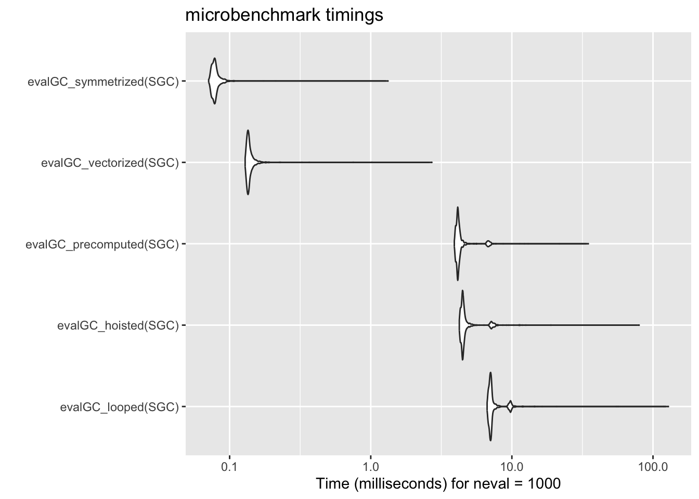
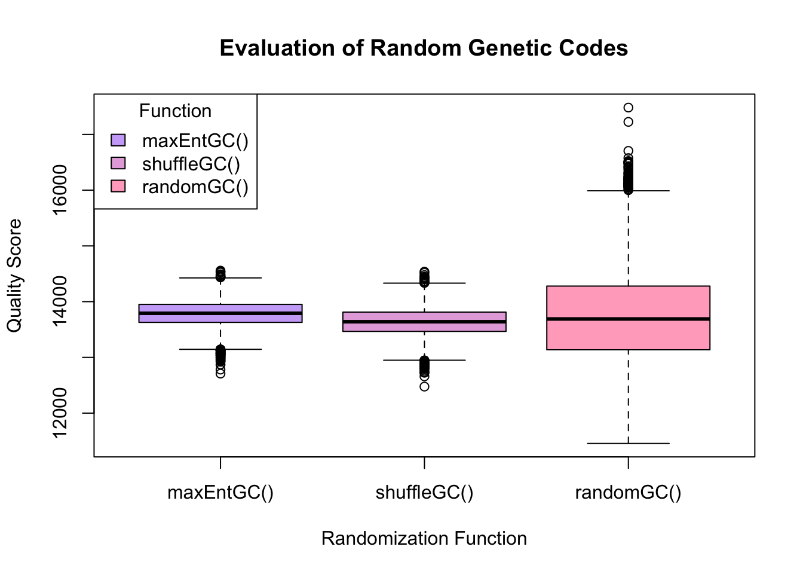
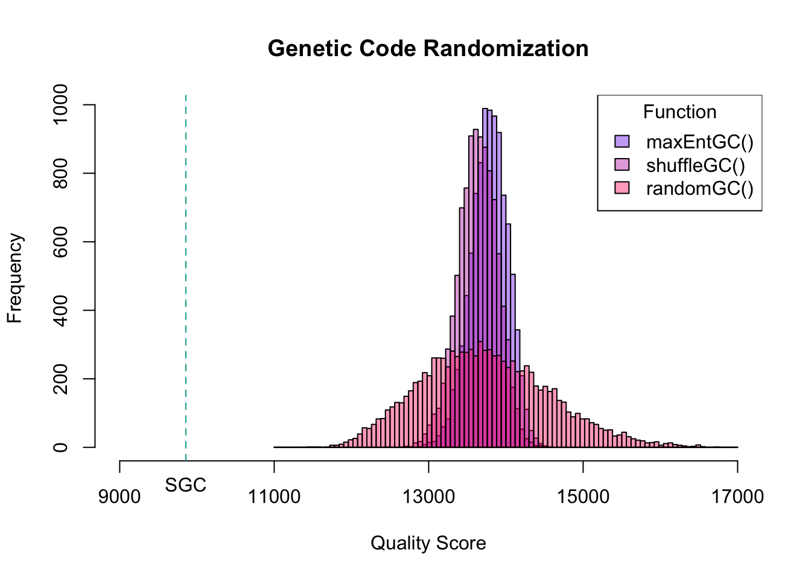
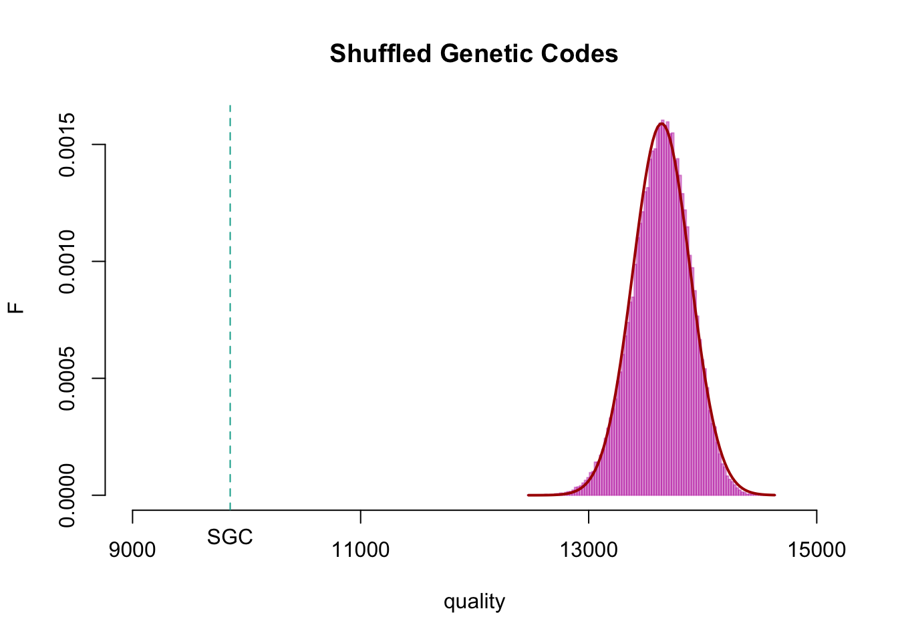
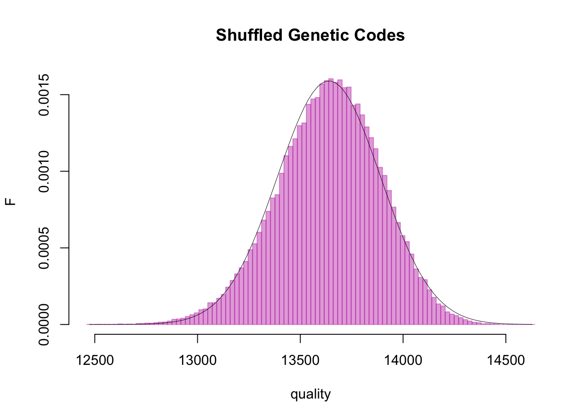

# Load the function
aaSim <- readRDS("./dat/aaSim.4.1.Rds")
# test it
aaSim("A", "Q")[1] 19.46133What do random genetic codes tell us about the Standard Genetic Code?
Version v 1.0, last updated October 13, 2025.
Roadmap
In this document, we develop the outlines of a rigorous computational experiment to determine what the Standard Genetic Code (SGC) is optimized for - if anything. We noticed that synonymous codons and codons for similar amino acids often are codon-neighbors. This structure of the genetic code would cause the most frequent type of mutation found in biology (single-base-pair changes), to be more likely to result in silent- or conservative missense mutations, rather than non-conservative or even nonsense mutations. Such a code would be structurally robust to mutations.
We first introduce a “Quality Score” for a genetic code, based on the biophysical similarity of the amino acids it places in neighbouring positions (using our aaSim() function), and we compute a benchmark value for the SGC.
Next we discuss speed. We examine various strategies to make our evaluations run faster. Even though this does not change the results, understanding these issues helps us understand why code was written in a certain way.
Models of random codes follow. There are different ways we can create “random” genetic codes, each with their own biological interpretation. We write code that shuffles the natural set of amino acids, code that creates a fully random code, and code that smooths out the unequal frequencies of amino acids.
We run the Experiment. We compare tens of thousands of random codes to the SGC’s benchmark.
Finally, we analyse the results. Producing the numbers is only the first step. We have to discuss what the numbers mean. We do this by considering different mathematical models that could describe the results, so we can express the difference as a probability. That probability is the result of our experiment.
The Conclusion (So Far): The SGC is a dramatic anomaly! It is far, far better at minimizing mutational damage than any of the random codes tested. The probability of getting a code as good as the SGC purely by chance is astronomically small. But this does not only mean that the code is structurally robust against mutations. It also entails that such robustness determined its evolution in the first place.
Note: try to resist the impulse to skip over the code in this document. In a document like this, the code forms part of the narrative and improving your code-literacy is one of the document’s objectives. The code is presented, not hidden away, so you can understand what is happening. There are no hidden resources, all of it is there for you to run at home. If the code seems hard to understand, you can always ask your AI to explain (at a high level) the what and why (or you can ask my to write better comments).
Some information about the structure of the .qmd is hidden away in <!-- HTML comments --> that don’t get rendered. You can look at the actual source learn to more about the css and Javascript behind some of the styling and the interactivity I use here. That is also not just infrastructure, but part of the teaching.
Can you explain "point mutation", "conservative and nonconservative" mutation, "missense", and "nonsense" mutation for me in non-technical terms?
This seems to be an ill-posed question at first, without specifiying for what.
But we can actually devise a strategy to answer the question. To evaluate the quality of the Standard Genetic Code (SGC), we need to define a measure of some property that we can apply to the SGC, and to randomly generated alternatives. If we find the SGC to lie outside the range of what we could reasonably expect for a random structure, we can conclude that this property - or something that has the same effect on the code’s structure - must have shaped the generation of the code. But the generation of the code is determined by its purpose! And therefore, the difference between the SGC and random codes defines both: what the SGC is good for, and how good it actually is in that respect.
We discussed that the structure of the SGC suggests that identical codons, and codons for similar amino acids are often codon-neighbours. This would be expected, if the purpose of the code is to make conservative point-mutations more likely than non-conservative mutations. We can define a computational experiment by defining a quality measure, applying it to the SGC and comparing it to the result for many random codes.
For each of 10,000 trials
Create a random genetic code
For each of its 64 codons
For each of its nine codon neighbours
Compute the similarity between the two encoded amino acids
Add the value to a sum: "quality"
Record the result
Evaluate the distribution of results
aaSim()We have developed aaSim() previously as a function that takes as input a pair of amino acids, and returns a value that we derived from a Principal Components Analysis of a large number of amino acid property scales. We stored it in the ./dat directory and can load it from there.
# Load the function
aaSim <- readRDS("./dat/aaSim.4.1.Rds")
# test it
aaSim("A", "Q")[1] 19.46133Internally, aaSim() works by looking up the pre-computed value for the amino acid pair in a table. Such lookups are fast.
One authoritative resource for the SGC is the collection of genetic codes held at the US National Center for Biotechnology Information (NCBI).
Many genetic codes have more than one start-codon. How does initiation of translation work in principle, and what is the difference when alternative start-codons are used. Also: if the start codon that is used is e.g. `TTG`, does the tranlated sequence starts with `L`? I have a basic grasp of molecular biology, but you need to define technical terms, if you could. Thanks!
We use our own version of the SGC table.
# Read the standard genetic code
SGC <- read.csv("./dat/SGC.csv")
# Name each row of the table by its codon.
rownames(SGC) <- SGC$Codon
# Extract the two columns we need, drop all others.
SGC <- SGC[ , c("Codon", "A")]
# Row names and column nnames allow us to access elements of the table quickly:
SGC["ATG", "A" ][1] "M"To construct a codon’s nine neighbours, we could either create the 3 * 3 possible codons that are different from the original, or we create all 3 * 4 possible codons, and remove the three original ones. Thrift or trim. The result is the same. The trim-option is a bit more clear to write:
neighs <- function(x, A = c("A","C","G","T")) {
# generate all 12 codons, then remove the three that are identical to x
y <- rep(x, 12) # make twelve copies of the input codon
pos <- rep(1:3, each = 4) # repeat the numbers 1:3 four times
substring(y, pos, pos) <- rep(A, 3) # replace each of the nucleotides in turn
# with one of letter from the alphabet
return(y[y != x]) # return the result without the three
# codons in which a nucleotide was
# replaced with the same one
}
# Example
neighs("ATG")[1] "CTG" "GTG" "TTG" "AAG" "ACG" "AGG" "ATA" "ATC" "ATT"I am looking at "codon-neighbours" in the Standard Genetic Code, but I have also heard the word "Hamming-distance 1" being used. What is that?
With this we can run an evaluation. It could be simply written in code, but I will put this into a function, so it is easy to re-use later:
evalGC_looped <- function(GC) {
# evaluate a Genetic Code
# GC: a table with 64 rows, each row named by a codon, and 2 columns "Codons"
# and "A"
# Value: the sum of all 64 * 9 distances of the amino acids encoded by a codon
# and all its neighbours
# Conditions: - the function aaSim() must exist in the work space, it returns
# a single number for a pair of input amino acids.
# - the function neighs() must exist in the work space, it returns
# the nine single-change neighbours for an input codon
sumDist <- 0
for (i in 1:64) {
codon1 <- GC[i, "Codon"] # choose the i-th codon
neighbours <- neighs(codon1) # create its 9 neighbours
for (j in 1:9) {
codon2 <- neighbours[j] # choose the j-th neighbour
aa1 <- GC[codon1, "A"] # translate the first codon
aa2 <- GC[codon2, "A"] # translate the second codon
sumDist <- sumDist + aaSim(aa1, aa2) # compute the distance and sum
}
}
return(sumDist)
}
evalGC_looped(SGC)[1] 9856.116This number is our rock-solid benchmark. No matter in what order we compute the pair distances, if we evaluate the nine neighbours of all 64 codons, we must get that number.
We could use this code as-is for our evaluation. Running 1,000 evaluations takes about 7.8 seconds on my computer. That’s absolutely sufficient for evaluating the SGC once. It’s a bit tedious for evaluating 10,000 or even 100,000 alternatives. But it is too slow if we are aiming to do optimization runs. However we can speed this up considerably.
Note: the remainder of this section deals with code speedup. Usually AI code is already written with efficiency in mind. But you should still know about the general strategies.
One strategy we can use is called hoisting. We translate aa1 and aa2 next to each other in the “inner” loop. But aa1 never changes there, we translate it 9 times in vain. Of the 18 translations we do for each of the 64 codons, only 10 are necessary. The change is trivial: we just raise aa1 <- GC[codon1, "A"] out of the inner loop to the outer loop. This is called hoisting. Inside a loop, compute only those values that depend on the loop index.
evalGC_hoisted <- function(GC) {
# evaluate a Genetic Code
sumDist <- 0
for (i in 1:64) {
codon1 <- GC[i, "Codon"]
aa1 <- GC[codon1, "A"] # <<< this line was "hoisted" from the inner loop
neighbours <- neighs(codon1)
for (j in 1:9) {
codon2 <- neighbours[j]
aa2 <- GC[codon2, "A"] # translate the second codon
sumDist <- sumDist + aaSim(aa1, aa2)
}
}
return(sumDist)
}
evalGC_hoisted(SGC)[1] 9856.116On my computer, this brings down the computation time for 1,000 runs from 7.8 seconds to 5.1 seconds - that is one third less time, which is pretty good for such a minimal change.
Another strategy we can use is precomputation. We don’t have to create our list of neighbours every time we evaluate a new code, because we always have the same nine neighbours for a codon. Only the translation changes, not the codons themselves. So we can create a matrix of neighbours once, and then use it for all future evaluations.
# Create a matrix of 64 * 10 empty strings.
allNeigh <- matrix(character(64 * 10), nrow = 64)
# Fill the matrix with each codon in column 1 and its its
# 9 neighbours in columns 2:10
for (i in 1:64) {
codon <- SGC[i, "Codon"]
allNeigh[i, 1] <- codon
allNeigh[i, 2:10] <- neighs(codon) # write the neighbours into the matrix
}
evalGC_precomputed <- function(GC) {
# evaluate a Genetic Code
sumDist <- 0
for (i in 1:64) {
codon1 <- allNeigh[i, 1]
aa1 <- GC[codon1, "A"]
for (j in 2:10) {
codon2 <- allNeigh[i, j] # fetch the second codon from GC
aa2 <- GC[codon2, "A"] # translate the second codon
sumDist <- sumDist + aaSim(aa1, aa2)
}
}
return(sumDist)
}
evalGC_precomputed(SGC)[1] 9856.116This time the speedup is not so dramatic, we go from 5.1 to 4.7 seconds per 1,000 evaluations which is about 8% faster than before.
Many of R’s functions are “vectorized”, that means we don’t need to call them with single values, but we can call them with whole vectors of values at once. This does not change the number of elementary operations, but it allows to perform them in the speedy internals of the programming language, with much less overhead. And that often results in remarkable speedup. I have written the function aaSim() to take advantage of this code-pattern. Consider:
aaSim("G", "W") # Three separate calls to aaSim() with single valued inputs [1] 35.95717aaSim("V", "S")[1] 21.32164aaSim("H", "K")[1] 20.07675vA1 <- c("G", "V", "H") # Concate the inputs into two vectors
vA2 <- c("W", "S", "K")
aaSim(vA1, vA2) # One call with the two vectors returns the same results[1] 35.95717 21.32164 20.07675To implement this, we create two vectors. The first holds our first codon, nine times each. The second holds our nine neighbours. We can do this speedily using the rep() function, or slowly but clearly, in a loop. It’s really the same. The loop is easier to understand, but if your AI chooses to do this, it will almost certainly use the rep() function or something similar …
vCod <- rep(allNeigh[1:64, 1], 1, each = 9)
vNei <- as.vector(t(allNeigh[1:64, 2:10]))
vCod[1:18] # limiting to the first 18 elements, just for brevity ... [1] "AAA" "AAA" "AAA" "AAA" "AAA" "AAA" "AAA" "AAA" "AAA" "AAC" "AAC" "AAC"
[13] "AAC" "AAC" "AAC" "AAC" "AAC" "AAC"vNei[1:18] [1] "CAA" "GAA" "TAA" "ACA" "AGA" "ATA" "AAC" "AAG" "AAT" "CAC" "GAC" "TAC"
[13] "ACC" "AGC" "ATC" "AAA" "AAG" "AAT"# We can use these vectors directly to translate. Remember that our rownames
# are the same as the codons, so we can use the codon vector to access the
# translation:
SGC[vCod[1:18], "A"] [1] "K" "K" "K" "K" "K" "K" "K" "K" "K" "N" "N" "N" "N" "N" "N" "N" "N" "N"SGC[vNei[1:18], "A"] [1] "Q" "E" "*" "T" "R" "I" "N" "K" "N" "H" "D" "Y" "T" "S" "I" "K" "K" "N"# And we can use the vectors directly to look up the distances:
aaSim(SGC[vCod[1:18], "A"], SGC[vNei[1:18], "A"]) [1] 12.38127 15.01799 53.93576 20.60967 16.47191 34.22776 17.42096 0.00000
[9] 17.42096 14.91353 11.93885 22.55022 13.26116 10.77641 28.61601 17.42096
[17] 17.42096 0.00000# Note the zeros that appear for each of the identities, and note that four of
# these values are the same (N, K) pairs and have the same result.
# In fact, with this we don't need to loop at all anymore: a single expression
# will do it all!
sum(aaSim(SGC[vCod, "A"], SGC[vNei, "A"]))[1] 9856.116Mind you - we are doing exactly the same computations, but much of it now happens “under the hood”, hopefully with a speedup.
# The entire evluation is now done in a single expression
evalGC_vectorized <- function(GC) {
return(sum(aaSim(GC[vCod, "A"], GC[vNei, "A"])))
}
evalGC_vectorized(SGC) # has to give the same result[1] 9856.116This time the speedup is dramatic: 1,000 evaluations now run in 0.2 seconds, i.e. they take only 5 % of the time they took previously, a 20-fold speedup, and a 33-fold speedup over our looped version.
There is one more type of speedup we can consider: symmetry. Each codon has nine neighbours, but each of the nine neighbours has the codon itself as its neighbour! And since aaSim(X, Y) is the same as aaSim(Y, X) we really only have to compute each unique relationship once, and then multiply the result by two. Let’s see how much that gains us.
First, let’s see how many unique codon pairs we actually have: we make a copy of our neighbor vectors, and then we rearrange them in lexical order. Since, lexically speaking, AAA < TTT we can swap the pair (TTT, AAA) to (AAA, TTT), and recognize the two identical pairs (AAA, TTT - original), and (AAA, TTT - swapped)
vCod_u <- vCod # Make a copy
vNei_u <- vNei
for (i in seq_along(vCod_u)) {
if (vCod_u[i] > vNei_u[i]) { # If lexically ordered from large to small ...
tmp <- vCod_u[i] # ... swap the two ...
vCod_u[i] <- vNei_u[i]
vNei_u[i] <- tmp # ... and they're order small to large instead.
}
}
# Create a single vector of "keys", to identify duplicates. This just pastes
# together the two codons, with a colon between them.
vKeys <- sprintf("%s:%s", vCod_u, vNei_u)
length(unique(vKeys)) # Which is indeed half of the 576 originals[1] 288# We remove the duplicated pairs from the codon vectors, and confirm that this
# allows us to get the same result when we evaluate the SGC:
sel <- ! duplicated(vKeys)
vCod_u <- vCod_u[sel]
vNei_u <- vNei_u[sel]
evalGC_symmetrized <- function(GC) {
return(2* sum(aaSim(GC[vCod_u, "A"], GC[vNei_u, "A"])))
}
evalGC_symmetrized(SGC)[1] 9856.116Half the look up, same result. Is it faster? Yes, we are going from 0.177 seconds per 1,000 evaluations to 0.157 seconds, a further speedup of a bit over 10 %, or 50-times faster than the original.
Let’s properly “benchmark” the performance and compare the results.
Can you explain to me - at a novice level - what it means to benchmark functions for comparison, and how this is different from "profiling"?
myBenchmarks <- microbenchmark::microbenchmark(
evalGC_looped(SGC),
evalGC_hoisted(SGC),
evalGC_precomputed(SGC),
evalGC_vectorized(SGC),
evalGC_symmetrized(SGC),
times = 1000L, # Number of repetitions
unit = "ms" # Results summarized in microseconds
)
# use kableExtra::kable() for a well-formatted table of results:
kableExtra::kable(summary(myBenchmarks),
digits = 2,
caption = "Benchmark summary: execution times in milliseconds (ms). Columns show min, lower quartile (lq), mean, median, upper quartile (uq), and max times across neval function calls.") |>
kableExtra::kable_styling(
full_width = FALSE,
bootstrap_options = c("striped", "hover", "condensed"),
position = "left"
) |>
kableExtra::column_spec(1, extra_css = "font-family: monospace; padding-right: 20px;") |>
kableExtra::row_spec(0, bold = TRUE, extra_css = "border-bottom: 2px solid black;")| expr | min | lq | mean | median | uq | max | neval |
|---|---|---|---|---|---|---|---|
| evalGC_looped(SGC) | 6.68 | 6.96 | 7.85 | 7.09 | 7.29 | 128.60 | 1000 |
| evalGC_hoisted(SGC) | 4.24 | 4.42 | 4.95 | 4.50 | 4.64 | 79.79 | 1000 |
| evalGC_precomputed(SGC) | 3.91 | 4.08 | 4.47 | 4.16 | 4.27 | 34.82 | 1000 |
| evalGC_vectorized(SGC) | 0.13 | 0.13 | 0.14 | 0.14 | 0.14 | 2.71 | 1000 |
| evalGC_symmetrized(SGC) | 0.07 | 0.08 | 0.08 | 0.08 | 0.08 | 1.33 | 1000 |
# display the distributions of times as a "violin plot"
ggplot2::autoplot(myBenchmarks)
Note that the time-axis uses a logarithmic scale. The important results are the median times, because some results are affected by language-internal additional tasks that happen to come up from time to time. The detailed results confirms that our fastest version is almost a hundred times faster than our initial, deliberate, step-by-step code. There are trade-offs however: the deliberate step-by-step version may be easier to understand, easier to validate with confidence, and easier to debug, since the steps can be individually verified. In fact, I had to give up on ChatGPT-5’s attempts to get his vectorized version to work correctly, and write it by hand instead. It’s easy to lose track of what exactly needs to happen with each vector and table, and the results may be plausible, but still incorrect - which is the worst possible outcome! That’s why the first benchmark number is so crucial for this little project.
There is one large field of speedup developments we have not mentioned: speedup by better algorithm. For example, instead of computing all those codes explicitly, perhaps we could come up with a way to predict their statistical properties from first principles. That would be an algorithmic speedup.
For robustness and portability, I wrap up the evaluation function as a “closure”. This way I can guarantee that accidental changes to the codon table or the neighbour vectors in my global workspace do not contaminate the function.
Can you explain to me - at a novice level - what a closure is in R, how to create one with a factory pattern, why this is useful, and how this compares to python code patterns?
# This is a bit technical code, that reproduces what we developed more
# Explecitly above ...
evalGCfactory <- function() {
# precompute the codon and neigbor vectors
# Create a matrix of 64 * 10 empty strings.
vN <- matrix(character(64 * 10), nrow = 64)
for (i in 1:64) {
codon <- SGC[i, "Codon"]
vN[i, 1] <- codon
vN[i, 2:10] <- neighs(codon) # write the neighbours into the matrix
}
vC <- rep(vN[1:64, 1], 1, each = 9)
vN <- as.vector(t(vN[1:64, 2:10]))
for (i in seq_along(vC)) { # Order pairs lexically ...
if (vC[i] > vN[i]) {
tmp <- vC[i]
vC[i] <- vN[i]
vN[i] <- tmp
}
}
vK <- sprintf("%s:%s", vC, vN)
sel <- ! duplicated(vK) # Identify duplicate pairs ...
vC <- vC[sel] # and remove
vN <- vN[sel]
myF <- function(GC) {
a1 <- GC[vC, "A"]
a2 <- GC[vN, "A"]
return(sum(aaSim(a1, a2) * 2))
}
return(myF)
}
evalGC <- evalGCfactory()
rm(evalGCfactory)
evalGC(SGC)[1] 9856.116Execution times for this closure are within 0.3% of our previous fastest version.
Why this matters. If we run large computational experiments, we need fast code. Our AI coding assistants will normally try to write efficient code. But as you saw above, doing that correctly takes a good global understanding of your data, a detailed understanding of your functions, and careful bookkeeping to weave this together correctly. This is hard for a transformer-based language model. You’ll need to encourage the AI to write some very simple benchmarks first, with verifiable intermediate steps, to be able to catch and fix errors that lead to results that look plausible, but are wrong. Those are the worst.
The next big task is to build a randomizer function - or several such functions, if we want to evaluate how sensitive our results are to the precise mode of randomization.
Each way of randomizing carries with it a different biological interpretation. Ultimately, we would like to test randomizations that respect the underlying biophysics, but are not tied to the existing stucture of the SGC. The distinction may not be easy to make however. Take for example “wobble bases” - are those the result of limitations in how precisely tRNA anticodons can pair with the mRNA codons, that influenced how the code evolved in its early days? Or did the structure of the code arise for different reasons, and then cause a relaxed requirement for third-nucleotide pairing?
Can you explain the "wobble base" hypothesis to me? Why has it been proposed as being important? Would such wobble be the result of a certain structure of the genetic code? Or did it cause that structure?
A simple but conceptually “clean” randomizer can be implemented by shuffling the mapping of codons to amino acids. This shuffling permutation is often used when we want to remove the effect of any ordering of elements, but leave the elements’ frequencies unchanged. The R function sample() is the workhorse of discrete random choices in R.
Can you explain the R function sample() to me at a novice level? Like: what it is useful for, how is it called, what are its parameters and such?
shuffleGC <- function(GC) {
# shuffle the amino acid column (column "A") of a genetic code
GC[ , "A"] <- sample(GC[ , "A"])
return(GC)
}
sort(table(shuffleGC(SGC)$A),decreasing = TRUE)
L R S A G P T V * I C D E F H K N Q Y M W
6 6 6 4 4 4 4 4 3 3 2 2 2 2 2 2 2 2 2 1 1 Crucially, if we merely shuffle the amino acids, all their frequencies stay the same, i.e we still have six leucine, three stop codons, 1 methionine etc.
We can compare this to almost fully random codes: we encode all 20 amino acids (plus stop) exactly once, then randomly assign letters to the remaining 43 slots, and then shuffle.
randomGC <- function(GC) {
# a fully random genetic code, with 20 amino acids and a stop codon
alphabet <- attr(aaSim, "alphabet") # use the alphabet that is packaged with
# the aaSim() function as an attribute
x <- c(alphabet, sample(alphabet, 43, replace = TRUE))
GC[ , "A"] <- sample(x)
return(GC)
}
sort(table(randomGC(SGC)$A),decreasing = TRUE)
E K N W D L T A C F H R V G M P * I Q S Y
7 6 5 5 4 4 4 3 3 3 3 3 3 2 2 2 1 1 1 1 1 Can you explain to someone with little background in mathematics what Shannon's information theory is about, and how "entropy" and "information" is understood there? What should I do to distribute an alphabet of 20 amino acids plus "*" stop, to 64 codons in a way that maximizes entropy, and what would the biological implications of such a code be?
maxEntGC <- function(GC) {
# a genetic code that has maximal Shannon entropy: 3 * 21 states + "T"
alphabet <- attr(aaSim, "alphabet")
x <- c(rep(alphabet, 3), "T")
GC[ , "A"] <- sample(x)
return(GC)
}
sort(table(maxEntGC(SGC)$A),decreasing = TRUE)
T * A C D E F G H I K L M N P Q R S V W Y
4 3 3 3 3 3 3 3 3 3 3 3 3 3 3 3 3 3 3 3 3 Nb. Shannon entropy is easy to compute: The general formula is
\[ H = -\sum_{i=1}^{n} p_i \log_2 p_i \]
where \(p_i\) is the true probability of observing symbol \(i\).
In practice, when working with finite-length samples (like our 64 codons), we estimate \(p_i\) using relative frequencies \(f_i\), so the empirical entropy \(\hat{H}\) becomes:
\[ \hat{H} = -\sum_{i=1}^{n} f_i \log_2 f_i \]
H <- function(x) {
freq <- table(x) / length(x) # Relative frequencies
return(-sum(freq * log2(freq))) # Shannon entropy in bits
}
H(c(attr(aaSim, "alphabet"), rep("*", 43))) # minimum possible[1] 2.246641H(SGC$A) # SGC[1] 4.218139H(randomGC(SGC)$A) # Fully random[1] 4.211287H(maxEntGC(SGC)$A) # Maximum entropy[1] 4.389098With all these preliminary considerations out of the way, we can run our actual experiments:
N <- 1e4
qMaxE <- numeric(N)
qShuf <- numeric(N)
qRand <- numeric(N)
tStart <- Sys.time()
for (i in 1:N) {
set.seed(i); qMaxE[i] <- evalGC(maxEntGC(SGC))
set.seed(i); qShuf[i] <- evalGC(shuffleGC(SGC))
set.seed(i); qRand[i] <- evalGC(randomGC(SGC))
}
tEnd <- Sys.time()
difftime(tEnd, tStart)Time difference of 3.000217 secsThis takes just a few seconds.
Let’s compare the distributions:
# summaries
summary(qMaxE) Min. 1st Qu. Median Mean 3rd Qu. Max.
12709 13628 13791 13785 13951 14557 summary(qShuf) Min. 1st Qu. Median Mean 3rd Qu. Max.
12476 13466 13640 13636 13813 14538 summary(qRand) Min. 1st Qu. Median Mean 3rd Qu. Max.
11456 13137 13689 13734 14279 17482 Distributions are often compared with “boxplots” - they are a sort of graphical shorthand for the summary() function:
Could you be so kind and explain boxplots in R, and how they are different or similar to the summary() function?
# Create boxplot
{
colM <- "#7700EE66"
colS <- "#BB00AA66"
colR <- "#FF006666"
boxplot(cbind(qMaxE, qShuf, qRand),
names = c("maxEntGC()", "shuffleGC()", "randomGC()"),
col = c(colM, colS, colR),
main = "Evaluation of Random Genetic Codes",
xlab = "Randomization Function",
ylab = "Quality Score")
legend("topleft",
legend = c("maxEntGC()", "shuffleGC()", "randomGC()"),
fill = c(colM, colS, colR),
title = "Function")
}
But the most informative plot is usually a histogram, typically with overlays …
#
# Histograms
xi <- 11000; xa <- 17000
brk <- seq(xi, xa, length=101)
{
hist(qMaxE[qMaxE > xi & qMaxE < xa],
breaks = brk,
col = colM,
main = "Genetic Code Randomization",
xlab = "Quality Score",
ylab = "Frequency",
xlim = c(9000, 17000),
xaxt = "n")
axis(side = 1, at = seq(9000, 17000, by = 2000)) # custom ticks
hist(qShuf[qShuf > xi & qShuf < xa],
breaks = brk,
col = colS,
add = TRUE)
hist(qRand[qRand > xi & qRand < xa],
breaks = brk,
col = colR,
add = TRUE)
legend("topright",
legend = c("maxEntGC()", "shuffleGC()", "randomGC()"),
fill = c(colM, colS, colR),
title = "Function")
abline(v = evalGC(SGC), col = "#00AA99", lwd = 1, lty = 2)
mtext("SGC", side = 1, at = evalGC(SGC), line = 0.5)
}
None of the three distributions come close to the SGC. The closest is the fully random distribution … because of it’s higher spread overall. Does this even create “biological” distributions? Let’s look at the best result.
Can we recreate the “best” random distribution?
You might have noticed the small expression set.seed(i) that I used when computing the random scores. Or maybe you didn’t - it’s been a long document to get here … Anyway: R (or python) does not and cannot create random numbers. That’s because it runs on a deterministic computer. What we do instead is create pseudo random numbers: we run an algorithm that produces sequences of numbers that statistical tests cannot distinguish from random sequences. But the cool thing is, if we know what state the RNG (Random Number Generator) was in when it produced the sequence, we can create the exact same sequence again. And the function set.seed() allows us to define the state of the RNG. Here’s an example:
set.seed(57)
sort(sample(1:49, 6)) # We know that the chance of guessing 6 of 49 numbers ...[1] 11 17 19 36 40 46 # ... is regrettably quite small.
sort(sample(1:49, 6))[1] 6 25 31 35 41 48sort(sample(1:49, 6)) # They are all so different![1] 8 14 15 16 27 32set.seed(57) # Except ...
sort(sample(1:49, 6)) # ... ??? didn't we just see this before ???[1] 11 17 19 36 40 46So here’s the thing: if I know the seed that was used to initialize the RNG, I can recreate any random sequence that it produced from there on out. And in the case of our random genetic codes, I know the seed, … because I set it to be the same as the loop index! So here’s how I can use that.
min(qRand) # Best quality score of a random genetic code.[1] 11455.57(iBest <- which.min(qRand)) # What is the index where it was created?[1] 9734set.seed(iBest) # Set the RNG seed to that number ...
bestRandGC <- randomGC(SGC) # ... and create the same genetic code again.
evalGC(bestRandGC) # Verify that it gives us the same score, even[1] 11455.57 # though it's creation is totally "random". Magic.… and what does this code look like?
GCtable(bestRandGC)TTT V TCT H TAT T TGT A
TTC T TCC T TAC G TGC V
TTA L TCA T TAA V TGA I
TTG S TCG N TAG Q TGG P
CTT A CCT M CAT D CGT I
CTC T CCC A CAC E CGC Y
CTA A CCA V CAA L CGA M
CTG C CCG P CAG P CGG T
ATT K ACT M AAT E AGT K
ATC S ACC N AAC K AGC R
ATA D ACA D AAA S AGA W
ATG N ACG A AAG Q AGG K
GTT * GCT T GAT Y GGT T
GTC C GCC K GAC C GGC M
GTA M GCA W GAA S GGA C
GTG G GCG H GAG F GGG N sort(table(bestRandGC$A), decreasing = TRUE)
T A K M C N S V D P E G H I L Q W Y * F R
8 5 5 5 4 4 4 4 3 3 2 2 2 2 2 2 2 2 1 1 1 We find a large abundance of T, which is on average the least dissimilar amino acid. The characteristically different amino acids, like I and R are much reduced in frequency, from 6 to 1 and 2. They have been replaced by more “bland” choices: apparently K and M appear suitable. And there is only a single stop codon.
Let’s stay with our shuffled codes instead. And ask: can we estimate the probability of getting somethig as good as the SGC by random chance?
Let’s get a larger sample of random shuffled codes for a smoother histogram. Our code is fast and that’s not hard to do:
tStart <- Sys.time()
N <- 1e5 # one hundred thousand random codes to be evaluated.
qShuf <- numeric(N)
for (i in 1:N) {
set.seed(i)
qShuf[i] <- evalGC(shuffleGC(SGC))
}
tEnd <- Sys.time()
difftime(tEnd, tStart) # Time difference of around ten seconds or soTime difference of 9.837614 secssummary(qShuf) Min. 1st Qu. Median Mean 3rd Qu. Max.
12461 13475 13648 13639 13813 14641 sd(qShuf)[1] 250.9507We can plot a histogram (again), and since this looks pretty much normally distributed, we can overlay the histogram with an actual normal distribution curve, with the same mean and standard deviation as our results …
brk <- seq(min(qShuf), max(qShuf), len=101) # histogram bin limits
colS <- "#BB00AA66"
{
myH <- hist(qShuf,
breaks = brk,
col = colS, border = colS,
freq = FALSE,
main = "Shuffled Genetic Codes",
xlab = "quality", ylab = "F",
xlim = c(9000, 15000),
xaxt = "n")
axis(side = 1, at = seq(9000, 15000, by = 2000)) # custom ticks
points(myH$mids, # using the histogram-bin midpoints as the x-values of
# our curve, and computing the corrsponding y-values
# with the dnorm() function:
dnorm(myH$mids, mean = mean(qShuf), sd = sd(qShuf)),
col = "#AA0000",
type = "l",
lwd = 2)
# the value for the SGC
abline(v = evalGC(SGC), col = "#00AA99", lwd = 1, lty = 2)
# label below the axis
mtext("SGC", side = 1, at = evalGC(SGC), line = 0.5)
}
The SGC appears pretty far off. If this is indeed underlyingly a normal distribution, we can estimate how far off it is:
dnorm(evalGC(SGC), mean = mean(qShuf), sd = sd(qShuf)) # [1] 7.028299e-53[1] 7.028299e-53That number is so fantastically improbable that achieving this quality from what amounts to a series of lucky coin flips is completely out of the question. But estimating this number makes the assumption that the distribution we generated is a normal distribution. Is this really correct?
Let’s have a closer look at the histogram:
{
myH <- hist(qShuf,
breaks = brk,
col = colS, border = colS,
freq = FALSE,
main = "Shuffled Genetic Codes",
xlab = "quality", ylab = "F",
xlim = c(min(qShuf), max(qShuf)))
points(myH$mids, # using the histogram-bin midpoints as the x-values of
# our curve, and computing the corrsponding y-values
# with the dnorm() function:
dnorm(myH$mids, mean = mean(qShuf), sd = sd(qShuf)),
col = "#000000",
type = "l",
lwd = 0.5)
}
We can see that there is just a little bit of extra density over on the lft side of the curve, just a little bit of shift around the mean, just a little bit of depletion on the right side. It’s not much, but it appears systematic. If the observed values are slightly heavy-tailed on the left, that would cause us to underestimate the probability of the SGC. This kind of shift is something we would expect if the distribution at the high-end is close to a boundary that cannot be crossed - i.e. something if something like a worst possible code appeared near the right-hand boundary. Let’s see if we can get a better fit for such a case. We enter the realm of curve-fitting functions to data: we attempt to fit a skew-normal-distribution (Azzalini and Capitanio 2014, 32–33).
\[ f(x;\,\xi,\omega,\alpha) = \frac{2}{\omega}\, \phi\!\left(\frac{x-\xi}{\omega}\right) \Phi\!\left(\alpha\,\frac{x-\xi}{\omega}\right), \] where \(\phi(\cdot)\) and \(\Phi(\cdot)\) denote the standard normal PDF and CDF, respectively, and \(\xi \in \mathbb{R},\quad\omega > 0,\quad\alpha \in \mathbb{R}.\)
When \(\alpha = 0, f(x;\,\xi,\omega,0) = \frac{2}{\omega}\, \phi\!\left(\frac{x-\xi}{\omega}\right)= \mathcal{N}(\xi,\omega^2)\) - i.e the standard normal distribution with mean \(\xi\) and standard deviation \(\omega\).
The skew-normal distribution is a close relative of the normal distribution, but it allows the two sides to have slightly different shapes. It is used when data are roughly symmetric yet show a small tendency for one tail to be heavier—such as biological measurements that cannot exceed a practical limit or that cluster near an optimum. Mathematically, the skew-normal adds a skewness parameter that gently tilts the normal curve to the left or right without changing its overall smoothness. This makes it ideal when the central-limit “many small causes” argument still holds, but some boundary or constraint distorts one tail.
This is a good “parsimonious” choice if we don’t have a specific mechanistic model for the asymmetry; the skewness parameter is really just an empirical adjustment. But it’s just one extra parameter. Let’s see if it gives us a better fit.
fit_sn <- sn::selm(qShuf ~ 1) # location–scale–skew fit
print(summary(fit_sn))Length Class Mode
1 selm S4 {
# Overlay
myH <- hist(qShuf,
breaks = brk,
col = colS, border = colS,
freq = FALSE,
main = "Shuffled Genetic Codes",
xlab = "quality", ylab = "F",
xlim = c(min(qShuf), max(qShuf)))
points(myH$mids, # normal distributiona
dnorm(myH$mids, mean = mean(qShuf), sd = sd(qShuf)),
col = "#000000",
type = "l",
lwd = 0.5)
# plot our fit
points(myH$mids,
sn::dsn(myH$mids,
xi = coef(fit_sn, "dp")["xi"],
omega = coef(fit_sn, "dp")["omega"],
alpha = coef(fit_sn, "dp")["alpha"]),
col = "#0055FF",
typ = "l",
lwd = 1)
}Indeed, this skewed distribution is a better fit. And this allows us to re-evaluate the p-value:
# Probability of the SGC "quality" given the skew-normal distribution with the
# parameters we just fit:
sn::psn(evalGC(SGC),
xi = coef(fit_sn, "dp")["xi"],
omega = coef(fit_sn, "dp")["omega"],
alpha = coef(fit_sn, "dp")["alpha"])[1] 1.012722e-35… which is still astronomically small, but many, many orders of magnitude larger than the previous estimate. The bottom line here is: probability estimates that are very far in the tails of distributions can be quite misleading if one does not actually have a detailed mechanistic model. But we can certainly agree that the probability of randomly coming up with the SGC is too small to matter.
We developed fast and validated code to compute a quality score for genetic codes, and we developed some alternative methods to generate “random” codes. Comparing the quality of our random codes with the SGC tells us:
What remains, is to see if an “evolutionary” process could more easily find “good” codes.
A driving force that might look very similar to biophysical similarity could be smoothing the evolutionary landscape , i.e. to have mutations make benign changes to the amino acid sequence. We would need a different measure of “similarity” to evaluate this. For example we could use natural protein sequences to considering the likelihood that mutations are accepted in related proteins. We might perhaps take mutations in two positions of a codon into account …↩︎